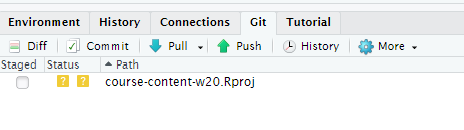

GitHub Classroom Guide for Stat 220
Jump to… Individual assignments | Group work | Additional resources
This is a guide for students to setup Git and GitHub for use in Stat 220.
If you are using the maize RStudio server, then you can connect to GitHub without any extra software downloads. If you are using RStudio on your computer, then you will need to download Git software (as directed in Computing Access) to use GitHub connected projects.
I will host all of our course materials on GitHub, and you will use GitHub to submit homework and collaborate on projects.
Getting setup with Git and GitHub
If you are not working on the maize RStudio server, then make sure that you have installed all of the software mentioned in Computing Access. In addition, you should install the usethis and gitcreds R packages.
Everyone needs to connect Git and GitHub by doing the following:
Register for account on GitHub (https://github.com/). I recommend using a username that incorporates your name (e.g. aloy). Please use your Carleton email with this account.
-
Setup options in Git by running the following code chunk in your console:
library(usethis) use_git_config(user.name = "Jane Doe", user.email = "jane@example.org")changing the first two lines to your own name and email (this should be the email associated with your GitHub account).
-
(Optional) This step explains how to use GitHub on RStudio without having to enter your password every time to connect. This is an optional step since you can still use GitHub without setting up a SSH key or caching credentials, you will just need to enter your password every time you push or pull with GitHub. Pick one method below: cache credentials for HTTPS or SSH. GitHub recommends HTTPS, so I recommend trying that first.
-
Strongly recommended: Cache credential using a HTTPS linked project.
Complete the steps in Section 10.1 of Happy Git with R to get a personal access token (you will need to install the
usethispackage first). Then, follow the directions in Section 10.2.1 of Happy Git with R (I’ve had good luck with thegitcredspackage, and it is installed on maize.) A second method is to generate a SSH key. First check to see if you have a SSH key. Go into the shell (again, through RStudio
Tools -> Shell) and complete on this page http://happygitwithr.com/ssh-keys.html, which is Chapter 11 in Happy Git with R.
-
(optional) Follow the instructions here (http://happygitwithr.com/push-pull-github.html) to ensure you can connect to GitHub from your computer. If you can’t get this command line push/pull to work that is fine. Try connecting to GitHub via RStudio, as detailed next. If you can’t connect via RStudio then contact me.
Individual assignments
If you followed the suggestions in the Using Rstudio in Stat 220 page, then you should already have an assignments folder on your computer or maize account.
Each new assignment/project will be posted as a repository on GitHub and added directly to your account (within the Stat220 organization). This repository will contain assignment details (README, .Rmd).
Creating an individual assignment repo and project
- Go to our course GitHub organization page and find your homework repo, such as
hw-1-username(where your username is attached). - Enter the online assignment repository on GitHub. Click the green “Code” button. Most of you should just use the default setting which is to “clone” (copy) using HTTPS. Click the clipboard to the right of the URL to copy the repo location. (If you are using SSH, make sure it says “Clone with SSH” in bold in the top left of the pop-up box. If not, click the “SSH” button and copy the link in the box to your clipboard.)
- Now open up RStudio and create a project as follows:
- Click the Project button in the upper right corner of your RStudio window and select New Project….
- Select Version Control and then New Project


- Paste the link you just copied into the Repository URL box. Leave the Project directory name blank (or keep the auto-filled name). Use the Browse button to find your assignments folder, then click Create Project
Warning: If you received an error in the above steps, you may have to clone with HTTPS instead of SSH (or vice versa). You can do this by again clicking on the “Clone or Download” button in the repository page, then clicking “Use HTTPS” in the top right of the pop-up box. Now copy the link and repeat this step.
Working on your assignment
An RStudio project should now open, which will allow you to start working on your homework assignment. You should see the project assignment name in the top right side of Rstudio. You will probably see a blank console screen when you open a new project. Look in the Files tab for your homework .Rmd file. Click on whatever file you want to edit (probably the .Rmd file) and edit away. Make sure that your current assignment’s project is the one open and showing in the upper rightproject name. To open a project, click on the .Rproj file or use the Open Project… option available in the upper right project link.
Commits
After you make changes to the homework assignment, commit them. What are commits you ask? Commits are essentially taking a snapshot of your projects. Commits save this snapshot to your local version of Git (located on your hard drive or the maize server). For example, if I make changes to a code so that it prints “Hello world”, and then commit them with an informative message, I can look at the history of my commits and view the code that I wrote at that time. If I made some more changes to the function that resulted in an error, I could go back to the commit where the code was originally working. This prevents you from creating several versions of your homework (homework-v1, homework-v2, …) or from trying to remember what your code originally looked like.
You can make commits in the Git tab in RStudio.

Click the Commit button in the Git tab. Check the boxes of the files that you want to commit, enter your commit message (briefly state what changes have been made), then hit Commit. You can read how to do this in RStudio in more detail here: http://r-pkgs.had.co.nz/git.html#git-commit.
Two things about committing.
- You should commit somewhat frequently. At minimum, if you’re doing a homework assignment, you should make a commit each time that you’ve finished a question.
- Leave informative commit messages. “Added stuff” will not help you if you’re looking at your commit history in a year. A message like “Added initial version of hello-world function” will be more useful.
Pushing changes to Github
At some point you’ll want to get the updated version of the assignment back onto GitHub, either so that we can help you with your code or so that it can be graded. You will also want to push work frequently when you have a shared GitHub repo for project collaborations (i.e. more than one person is working on a project and code). If you are ready to push, you can again click on the “Up” Push arrow in the Git tab or in the Commit pop-up window or in the Git tab (shown above).
To “turn in” an assignment, all you need to do is push all your relevant files to Github by the deadline.
Group work
Collaborative Github assignments are pretty similar to individual assignments.
Creating a group/partner assignment repo and project
Go to our course GitHub organization page and find the repo for your group, for example if your group name is “team01” the you might find the mp1-team01 repo. Clone this repo to your computer/maize account using the same steps done for an individual assignment (see steps 2-3).
Working with collaborative repos
For group homework, I suggest that only the recorder edit the group-homework-x.Rmd file to avoid merge conflicts! Other group members can create a new Markdown doc to run and save commands. Only the recorder needs to push changes (answers) to the Github repo and all others can then pull these changes (i.e. the final answers) after the HW is submitted.
When you are working together on a Github project, you should commit and push your modifications frequently. You will also need to frequently pull updates from Github down to your local version of RStudio. These updates are changes that your teammates have made since your last pull. To pull in changes, click the “Down” Pull arrow in the Git tab (shown above).
If you get an error about conflict after pulling or pushing, don’t freak out! This can happen if you edit a file (usually an .Rmd or .R file) in a location that was also changed by a teammate. When this happens you should attempt to fix the merge conflict. Take a look at this resource site and try to fix the merge conflict in Rstudio. If that doesn’t work contact me!
Additional resources
- Happy Git and GitHub for the useR
- Rstudio, Git and GitHub
- Interactive learning guide for Git
- GitHub Guides
- Git setup for Windows (video)
- Git setup for Mac (video)
- How to clone, edit, and push homework assignments with GitHub Classroom (video)
Acknowledgements
Most of this content in this guide was taken from https://github.com/jfiksel/github-classroom-for-students and edited by Adam Loy for our classroom use. and is licensed under the CC BY-NC 3.0 Creative Commons License.